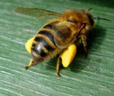

Разом з нектаром бджоли несуть у вулик на задніх лапках і так зване обніжжя. Різноколірне обніжжя це і є
квітковий пилок або чоловічі статеві клітки, якими наповнені пильовики, що оточують квітковий товкач. За
сезон бджолина сім'я вживає до 35-40 кг пилку, що є потужним природним білково-вітамінним концентратом для
вигодовування розплоду. Для того, щоб зібрати таку кількість пилку, бджолам доводитися неабияк попрацювати.
По своїх живильних властивостях і вмісті амінокислот квітковий пилок близький до білкових продуктів тваринного
походження, адже по енергоємності з нею може порівнятися лише м'ясо, яйця і молоко. Лише за декілька днів завдяки
вживанню квіткового пилку маса личинки збільшується в сотні разів Крім того пилок служить основою для вироблення
бджолами маткового молочка, незамінної речовини для життя матки і необхідного для розвитку личинок робочих бджілок
в перші три дні життя. Ось деякі властивості квіткового пилку, які необхідно знати кожному:
- Пилок це криниця вітамінів і мікроелементів, що налічують не менше двохсот коштовних для людини речовин;
- Сирий пилок швидко псується і тому її сушать в сушильних шафах. Величезна частина корисних властивостей квіткового
пилку при термічній обробці втрачається;
- Якщо ж змішати свіжозібраний пилок з медом, то мед, виступаючи в роль консерванта, обереже пилок від псування.
Таке поєднання меду і пилку і буде кращими ліками;
- Протягом року зберігання квітковий пилок втрачає до 75 відсотків своїх лікарських властивостей, тому вживати обніжжя
краще всього в свіжому вигляді;
Спеціальні пристрої, закріплені бджолярем у вічка дозволяють за сезон зібрати декілька кілограмів
квіткового пилку. У якомусь сенсі це насильство над бджолами, адже для того, щоб пилок обсипався із задніх ніжок
бджіл в контейнер, їм доводиться насилу пролізати крізь вузькі отвори пильцесборника. Долаючи такі труднощі на дорозі
у вулик, бджілки незрідка травмуються.